Undertale fue el primer juego original en el que trabajo Toby Fox, según dice él y tras la salida de Deltarune no era el juego que
estaba pensando hacer, más bien Undertale es un juego a base de las ideas que no entraron en Deltarune.
Este proyecto fue echo gracias al motor de GameMaker y financiado con un kikstarter que tan solo pedía 5.000 $ pero increíblemente
supero 10 veces esta cifra acabando con 51.000$ y 2398 patrocinadores.
El juego fue bastante comparado con Mother (esto no es extraño pues Toby era un gran fan de esta saga) aunque también con otros juegos
como: Cave Story, Shin Megami Tensei, Touhou o la serie Homestuck.
Fue una joya dentro de los videojuegos independientes, aclamado por la crítica, gracias a sus personajes, historias, humor y posibilidades que ofrecia a la hora de vivir esta experiencia.
Se trata de un juego RPG que renovo el genero dando una nueva mecanica a las batallas y mas emocion a la historia
Base del juego
El juego te pone a control de Frisk, el un niño que acaba de caer del monte Ebott al mundo de los monstruos, desde aquí tendrás que pasar por las distintas partes del subsuelo desde las antiguas ruinas hasta el caluroso hotland, en este recorrido te encontraras distintos percances, desde distintos puzles puestos por estas regiones hasta enemigos feroces que te querrán capturar.
 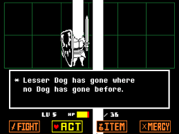
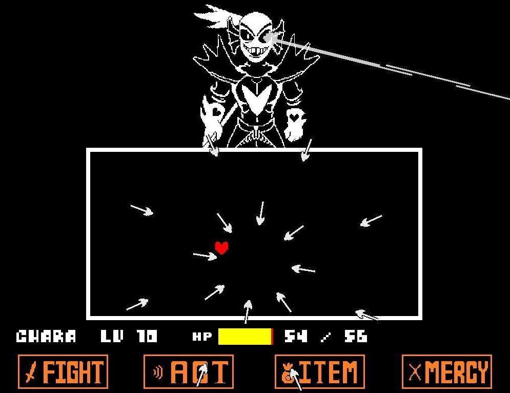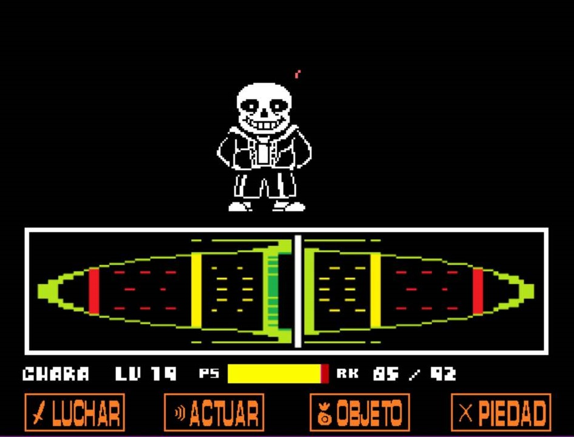
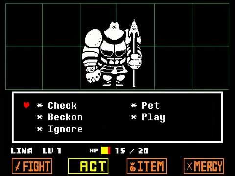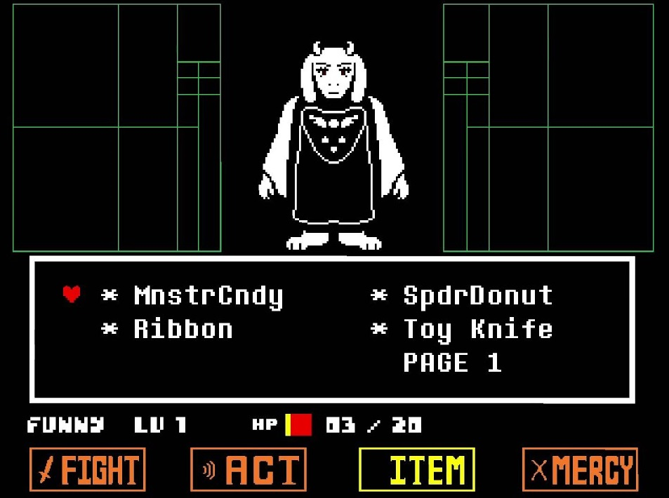
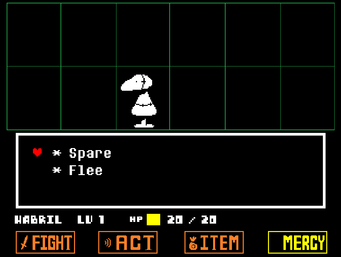
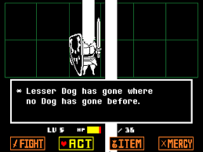
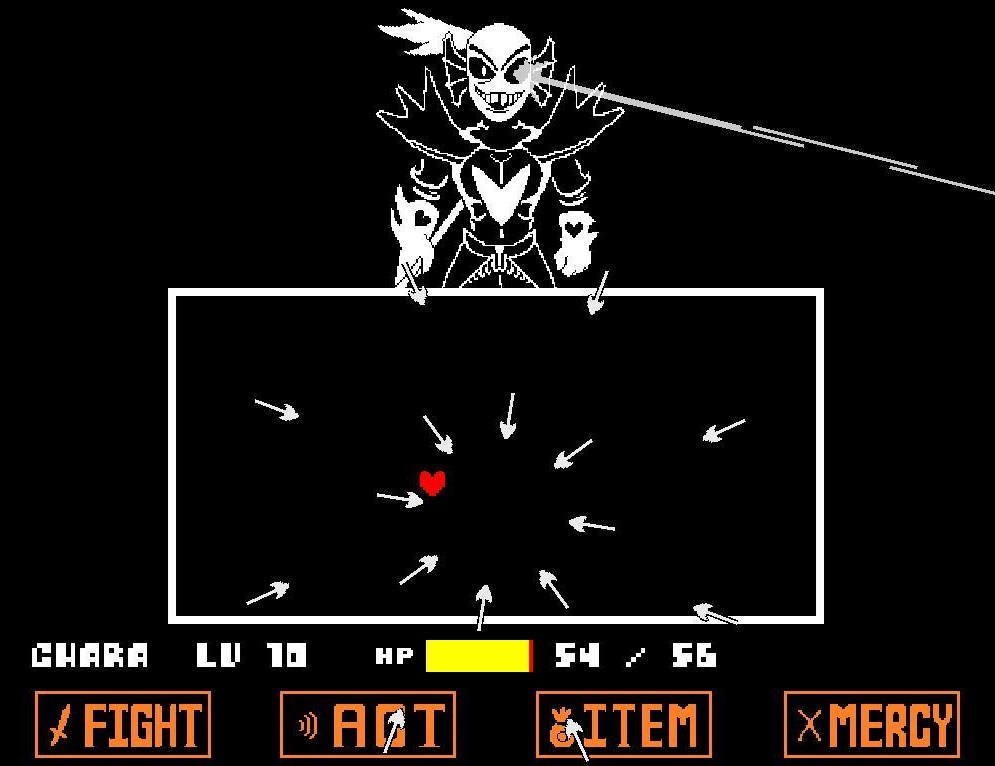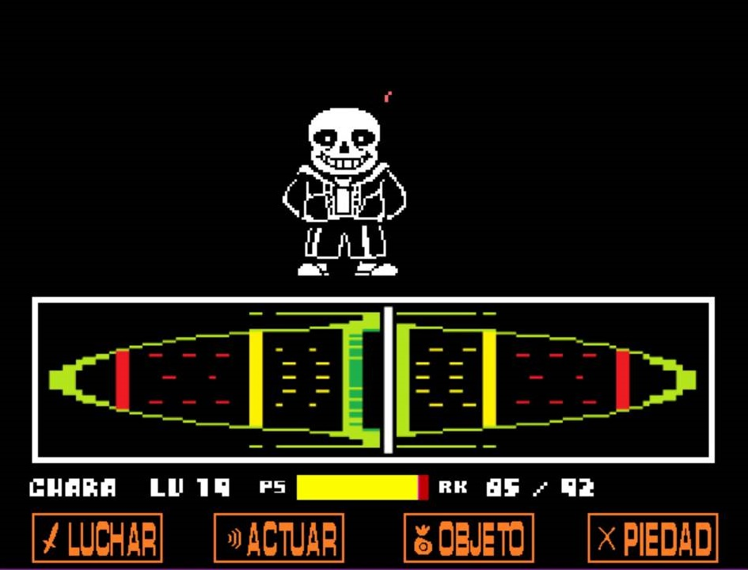
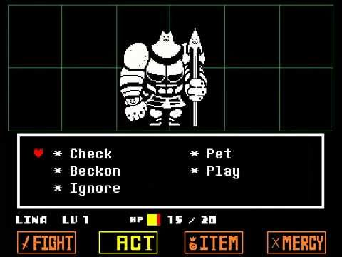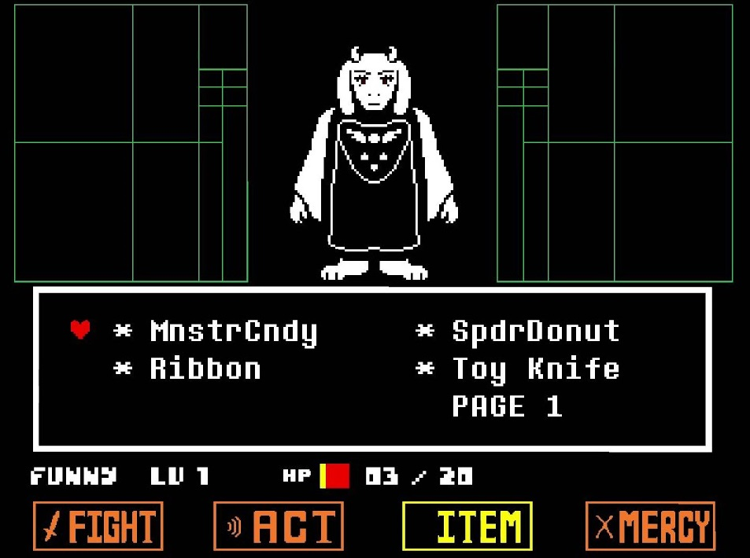
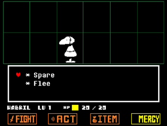Peleas
- El enemigo arriba, este en mitad de la pelea tras cada turno se le abrirá un bocadillo de texto y nos podrá decir distintas cosas.
- Luego tendremos un cuadro de texto, ahí se nos pondrán las distintas indicaciones de la pelea como comentarios aleatorios de lo que esa sucediendo, como “Ahora eres azul” o las cosas que el personaje hace en medio de la batalla, como “Undyne piensa en sus amigos y golpea el piso con sus puños”, este recuadro además de estas cosas será el punto principal donde aparecerán las cosas, como sea atacar, opciones de actuar o los ataques del enemigo.
- Debajo de este recuadro tenemos de izquierda a derecha:
- El nombre que elegimos al empezar a jugar.
- El lv que tenemos
- La fracción de vida que nos queda a que tenemos.
- Y abajo como última parte tenemos los distintos botones de acción en naranja.
- Primero tendríamos el botón de “FIGHT” o pelea, al darle a este botón se nos abrirá una especie de ovalo en el recuadro de texto con distintos colores que hace la función de diana, pues ira pasando una o varias rallas (según el arma que posees) a través del ovalo y si las paramos justo en el centro de este el haremos más daño.
- Luego tenemos el botón de “ACT” o actuar, al presionarlo, el cuadro de texto nos mostrara distintas opciones y acciones que podemos hacer para contentar al enemigo, o enojarlo, así también como chequear los stats del enemigo, según como lo hagas el enemigo se alegrara o no.
- A la derecha de este tenemos el botón de “ITEM” u objetos, la verdad esto no tiene mucha historia, en nuestra aventura nos encontraremos con muchos enemigos y, aunque podemos curarnos al máximo en algunos puntos esto no será suficiente, por ello están las tiendas, sitios que ofrecerán ítems y alimentos de recuperación de vida, así cuando estemos en mitad de batalla podemos curarnos, aunque esto no es exclusivo de las peleas pues los objetos también se pueden consumir en mitad de la aventura, cuando en mitad del enfrentamiento le demos a este botón en el cuadro de texto se nos mostrara los distintos objetos que tenemos, así podemos elegirlos y con ello curarnos.
- Por ultimo estría el botón el botón de “MERCY” o piedad, al darle a este botón en el cuadro de texto nos aparecerán dos opciones, perdonar y huir, al hacer unas acciones en concertó como o atacando una cantidad de veces el enemigo nos pedirá clemencia o nos otorgara piedad, de forma que es ese momento el nombre del enemigo cambiara a amarillo y podremos venir aquí y darle a perdonar para acabar la pelea, la opción huir básicamente nos permite huir de una pelea aunque bueno, hay algunos jefes o enemigos que no se les permite hacer esto.
Clores en batalla
Empecemos con los ataques de colores:
- Ataques verdes: son los primeros que vemos de parte del monstruo de las ruinas Vegetoid, este tipo de taques nos cura un poco de nuestra vida, normalmente están unido a como actuemos frete al enemigo, pues algunos enemigos tendremos la opción de decirles que nos den de comer o nos limpien, momento en el que el enemigo nos lanzara varios ataques con uno o dos de este color para que los toquemos, si hacemos esto el enemigo luego de esto nos dará piedad, este tipo de ataque también nos lo dan las almas humanas en la batalla contra flowey para ayudarnos.
- Ataques celestes: El segundo ataque de color que nos encontramos a manos de un perro de la guardia canina de snowdin, para evitar estos ataques no hay más que quedarse quieto, pues si no recibiremos daño, en hotland habrá distintos puzles que incluirán láseres de colores, y si sale este color tendremos que hacer exactamente lo mismo que si fuera en combate.
- Ataques Naranjas: Los últimos que nos encontramos, en uno de los monstruos de la zona de hotland, para esquivarlos tendremos que movernos mientras nos atraviesan, de lo contrario recibiremos daño, este tipo de ataques serán los que menos veamos en nuestra aventura pues solo están en uno de los enemigos de hotland, el jefe secreto So Sorry y Asgore, además de también aparecer en los puzles de láseres de hotland.
- Ataques grises: más que ataques son indicaciones que toman el turno de un ataque, solo aparecen dos veces, en la batalla contra napstabloook por primera vez y en la batalla contra mettaton, lo único que hacen es poner un comentario en el cuadro de texto mientras tenemos el control de nuestra alma, o en el caso de mettaton nos permite escribirle un texto.
Por el otro lado los cambios de alma que tenemos serian:
- Alma azul: La primera que nos enseñan, en la batalla contra papyrus, y después en la ruta genocida aparecerá en la batalla contra Sans, en lo que consiste es en la gravedad, al tener el alma de esta forma no podremos volar, solo movernos de izquierda a derecha por el suelo y saltar, en la batalla contra sans le mecánica cambia un poco, pues sans nos podrá golpear contra el suelo o elegir a que dirección caeremos, de forma que nos puede ejercer gravedad hacia arriba derecha izquierda y evidentemente abajo.
- Alma verde: aparece tan solo en la pelea contra undyne, en este modo undyne nos acorrala y nos da una lanza, luego de eso nos empezara a lanzar lanzas a derecha, izquierda, arriba y abajo, que tendremos que detener con la lanza que nos ha dado, en este estado el recuadro se hace pequeño impidiendo movernos y tampoco tendremos la opción de huir.
- Alma morada: aparece tan solo en la pelea contra muffet, en hotland, en este estado muffet no llenara de tela de araña reduciendo nuestra movilidad a 3 o más líneas que solo podremos movernos de izquierda a derecha en ellas o cambiando de línea.
- Alma amarilla: Aparece tan solo en dos peleas que tenemos contra mettaton, en este modo el teléfono que teníamos se transforma en una pistola, nuestra alma se gira y con el botón de espacio se nos permite atacar y disparar un proyectil, con esto tendremos que dispararles a distintos objetivos para que no nos den.
 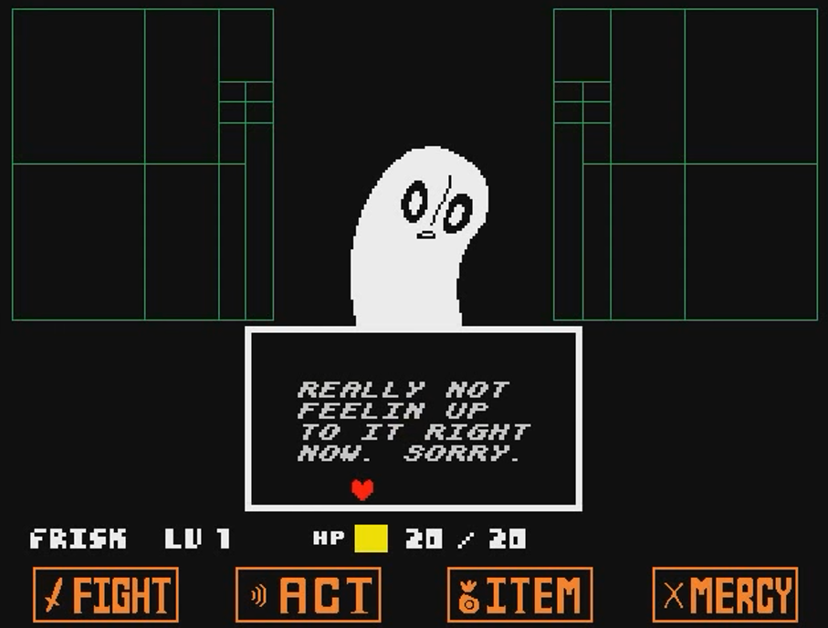
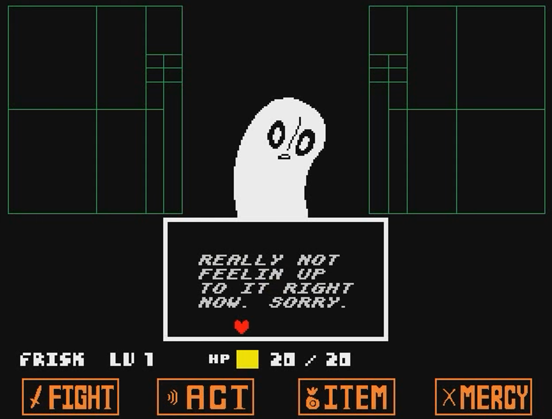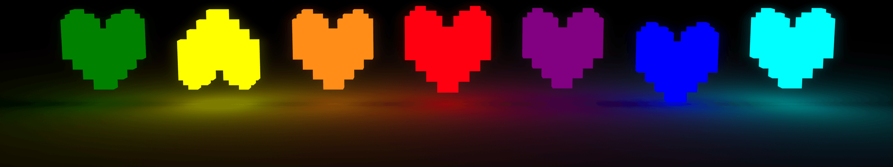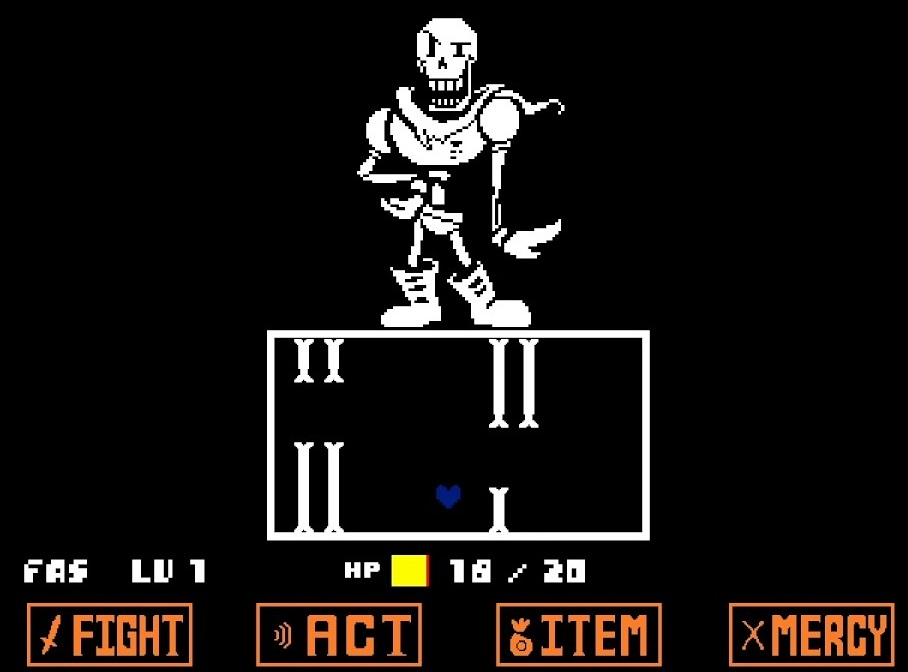 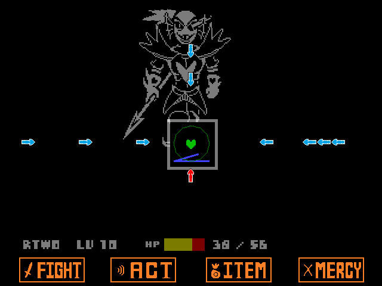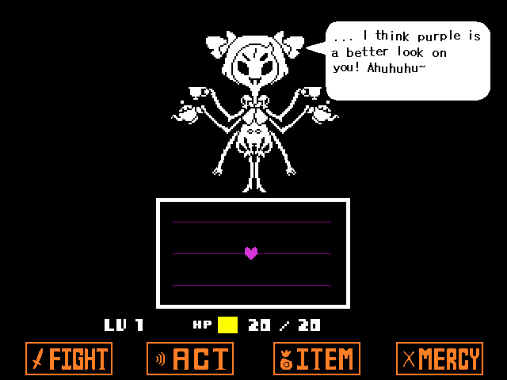 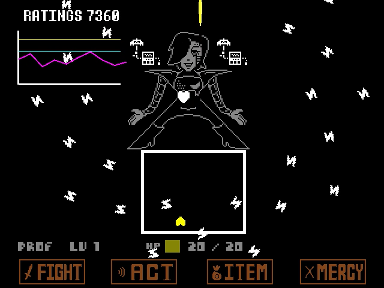
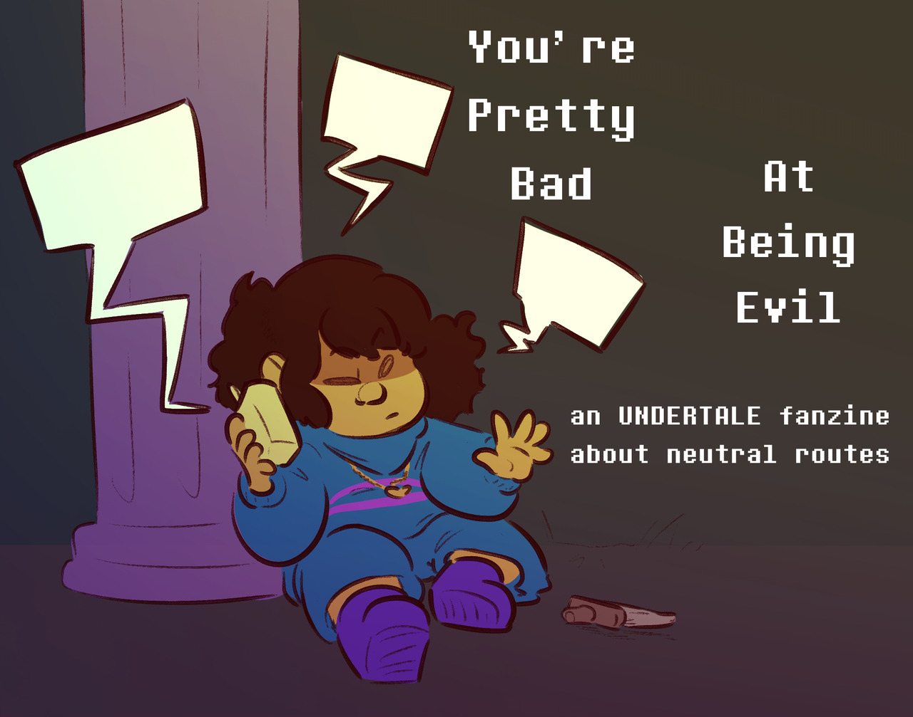

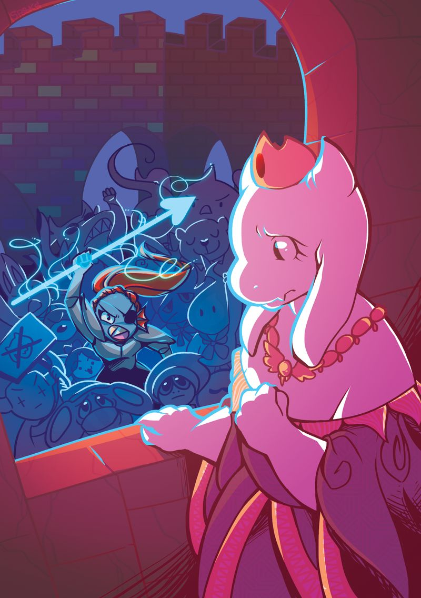
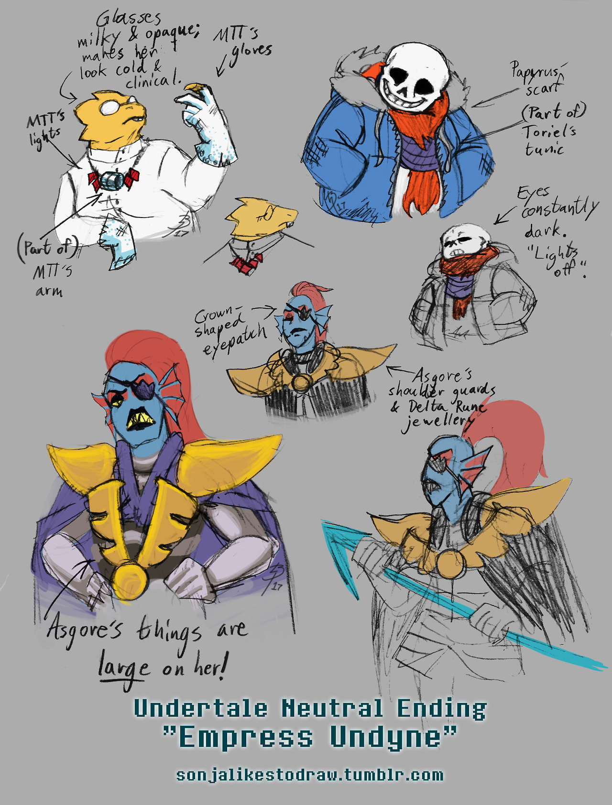
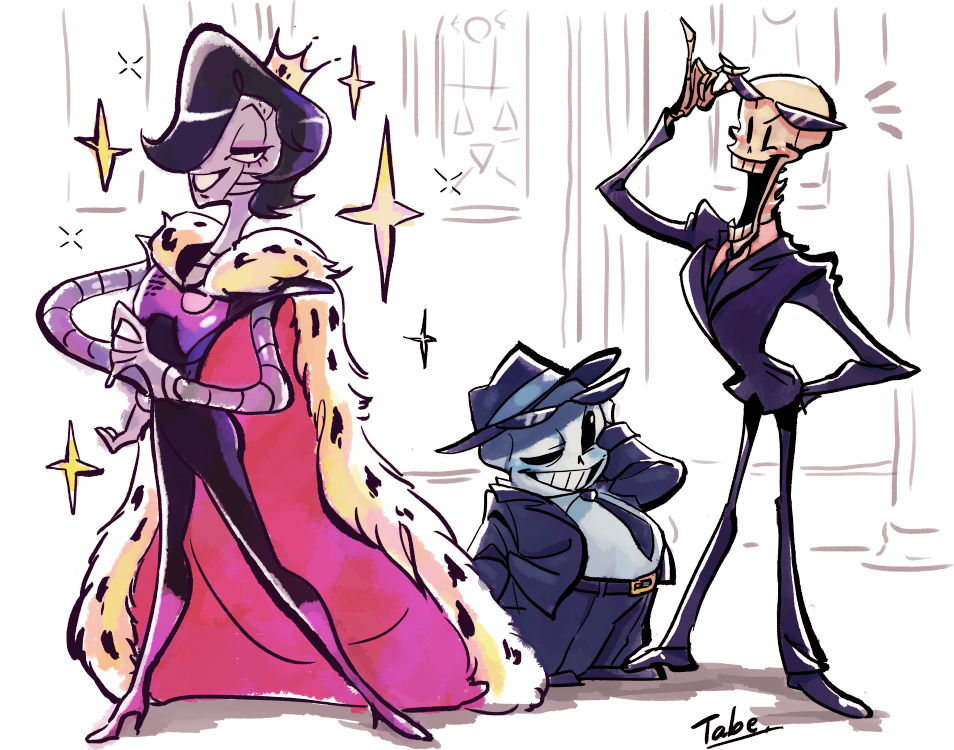
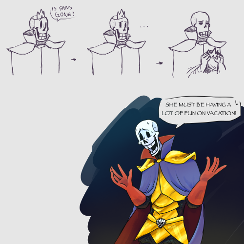
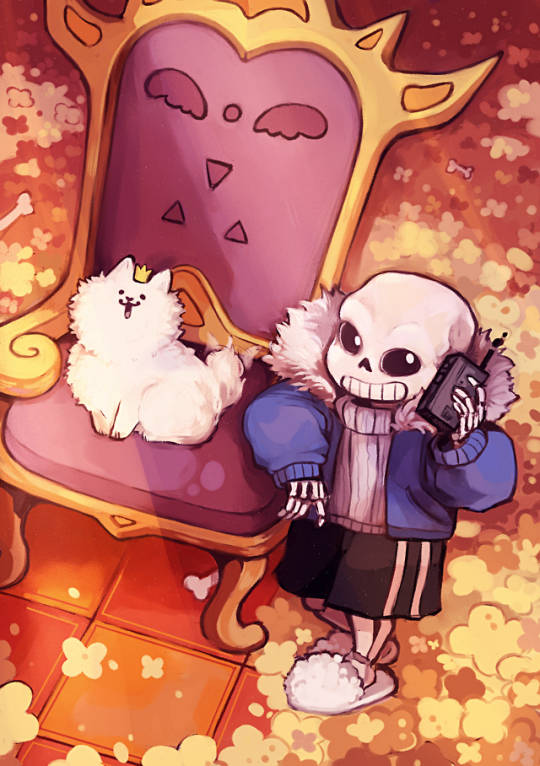
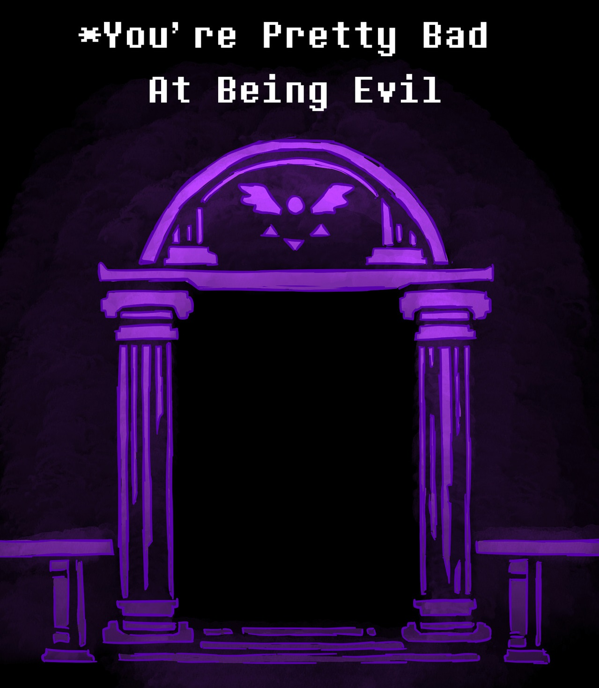
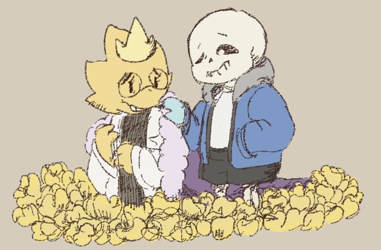
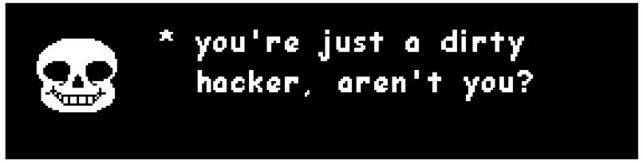


Poder de eleccion
Bueno en Undertale esto no es tan así, tus actos tienen consecuencia y cuando matas a un enemigo, matas a un personaje que no tenía la culpa, el cual tenía amigos y familiares que por tus acciones ya no podrán volver a verlo.
Dicho esto, según tus acciones la historia se ramifica en tres rutas:
- Ruta neutral: La que se suele hacer siempre, pues si juegas undertale como cualquier juego rpg normal, es decir, matando a
todos los enemigos que salgan a tu camino, entonces llegaras a esta ruta, aunque también con tan solo matar a un monstruo
entraras en esta ruta. Esta ruta en un principio es prácticamente igual que la pacifista, pues antes de tener un final pacifista
tendremos un final neutral en esa ruta pacifista, aunque si hay algunas cosas que no se pueden hacer en esta ruta, como la cita
con undyne y alphys o entrar la “True Lab”, bueno si puedes tener estos eventos, pero todo según en qué momento empieces a matar
a monstruos. El final de esta ruta siempre será el mismo, asgore muriendo, y nosotros enfrentándonos a flowey con las almas
humanas, después de esto se deduce que el humano salió del underground y dejo atrás el mundo de los monstruos, sin almas humanas
para escapar (se destruyeron tras ser absorbidas por flowey), sin un líder para guiarles (asgore murió), y sin esperanza…. ¿O no?
Bueno, como podrás ver en esta página, la barrera esta echa para que la forma de atravesarla sea mediante un alma humana y otra de
monstruo, pero asgore murió así que el humano probablemente nunca pudo salir del subsuelo, realmente nunca se menciona que paso luego
de la neutral así que cualquier teoría valdría. Luego de estos eventos tenemos el fina, con la llamada de Sans, es aquí cuando podemos
recibir los distintos finales neutrales según que monstruos hayamos matado, la llamada se separa en dos partes, Primero sans nos da un
comentario, estos pueden ser:
- Comentando la capacidad del protagonista por desafiarse a sí mismo: esto sucede si no usaste consumibles, no mataste a papyrus, nunca te quitaste el vendaje y estas al LV 1.
- Comentado si alguna vez comimos algo: esto sucede si no usaste consumibles y no mataste a papyrus.
- Comentando si aún lleva ese grueso vendaje: esto sucede si nunca nos cambiamos el vendaje y no matamos a papyrus.
- Sugiriéndote que guardes la partida: esto sucede si nunca guardamos la partida y no matamos a papyrus.
- Menciona que has hecho a un muñeco de nieve realmente feliz: esto sucede si nunca nos desasimos del trozo de muñeco de nieve de snowdin y no matas a Papyrus.
- Dejará un mensaje: si no hiciste ninguno de los objetivos anteriores o mataste a papyrus.
Después de esto la llamada se ramifica en los distintos finales:
- Final de toriel: Requisito que toriel este a salvo.
Toriel ha regresado a su trono para gobernar el Subterráneo y ha instaurado una política de no hostilidad hacia los futuros humanos que caigan en su mundo. Este final luego se ramifica en una de tres variantes: el "Final de la familia", el "Final de Undyne traicionado" o el "Final de la reina exiliada".
- Final de la familia: Requisito que el protagonista se ha hecho amigo de Papyrus y Undyne, no ha matado a ningún
monstruo y ha derrotado a Asgore.
A pesar de la desaparición de las ALMAS humanas y la trágica muerte de Asgore, Toriel despierta los espíritus de los habitantes del Subterráneo y les dice que no se rindan a la desesperación. Sans también anima al protagonista a no rendirse nunca.
La llamada pasa a Papyrus, quien proclama con orgullo su nuevo cargo como "CAPITÁN DE LA GUARDIA REAL". Esto resulta ser una figura decorativa, ya que la Guardia Real (cuya responsabilidad principal era vigilar las ALMAS humanas) de hecho se ha disuelto. Su único deber real es cuidar el jardín del castillo del Nuevo Hogar.
La ex capitana de la Guardia Real, Undyne, ingresa a la llamada y explica que ha encontrado un nuevo trabajo como asistente de laboratorio de Alphys. También ha sido nombrada profesora de gimnasia de la nueva escuela de Toriel; se jacta de que puede levantar a siete niños. Luego comienza a llorar la pérdida de Asgore, pero luego le asegura al protagonista que no fue su culpa y que solo estaban haciendo lo que tenían que hacer. La siguiente parte de este final varía dependiendo de si el protagonista ha salido con Alphys.
- Si no ha salido:
Alphys se vuelve aún más solitaria. Sin embargo, Undyne afirma con seguridad que puede ayudar a Alphys a superar lo que sea que la moleste. Undyne también le recuerda al protagonista que ella y los otros monstruos sacrificaron mucho para ayudar al protagonista a regresar al mundo humano; por esa razón, el protagonista debe apreciar al máximo la vida en la Superficie y hacer que ese sacrificio valga la pena. - Si ha salido:
Undyne la mete a la llamada. Alphys primero le asegura al protagonista que Mettaton está bien, y luego menciona que está buscando una nueva forma de liberar a los habitantes del metro. Ella está trabajando más duro que nunca, principalmente porque Toriel es un supervisor mucho más estricto de lo que nunca fue Asgore.
La llamada termina cuando Sans menciona que el teléfono tiene poca batería y todos se despiden. - Si no ha salido:
- Final Undyne traicionada: Requisito que el protagonista se hizo amigo de Undyne o no y mató a menos de diez monstruos
o mató a Mettaton. No se puede hacer amistad con Undyne si el protagonista había matado monstruos antes de iniciar su
lugar de reunión.
La primera parte de esta llamada se desarrolla como en el final de la familia. Toriel hace todo lo posible para decirles a los habitantes del Subsuelo que no se rindan a pesar de que su situación es bastante sombría. Sans también le dice al protagonista que tampoco deben rendirse. Sans luego le entrega el teléfono a Papyrus, quien se hace cargo del resto de la llamada.
Papyrus afirma que desde que Toriel disolvió la Guardia Real, no tiene idea de qué hacer con su vida, pero decide seguir trabajando duro, "¡AUNQUE NO HAY NADA EN QUE TRABAJAR!" Sin embargo, a pesar de que Papyrus le asegura que lo está haciendo bien, afirma que Undyne lo tiene difícil desde que perdió su trabajo y su casa, y dice que él y Sans la están cuidando en su casa. Sans la contrató en su puesto ilegal de perritos calientes en Hotland, pero Undyne odia trabajar allí. El resto de la llamada telefónica se ramifica en tres caminos diferentes dependiendo de lo que haya hecho el protagonista. Hacerse amigo de Undyne simplemente hace que Undyne odie al protagonista más que nunca desde que traicionaron su confianza y mataron a alguien.
- Si el protagonista no se ha hecho amigo de Undyne: Undyne simplemente culpa al protagonista por la muerte de Asgore. Papyrus menciona que tiene un plan para cruzar la barrera y golpear al protagonista. Papyrus cree que su plan es imposible, pero también espera que no lo sea, ya que significaría reunirse con el protagonista nuevamente, incluso si eso significa luchar contra ellos. Papyrus luego le dice al protagonista que mantenga los dedos cruzados y se mantenga en contacto para facilitar sus planes.
- Si el protagonista mató a Mettaton sin importar si se hizo amiga de Undyne o no: Undyne está devastada ya que no solo Asgore se ha ido, sino que Alphys también ha desaparecido, los otros personajes no la encuentran en ninguna parte (es posible que ella se suicide en el Laboratorio Verdadero) Undyne se lamenta de que no pudo protegerla, y Papyrus comenta que es difícil lograr que ella haga algo. Papyrus sugiere que vaya tras el protagonista para vengarse, pero Undyne dice que "La venganza no traerá a nadie de vuelta". Papyrus no está al tanto de lo que les pasó a Asgore y Alphys, por lo que le pide al protagonista que traiga a los amigos de Undyne de vuelta ya que ella no lo está haciendo tan bien.
- Si el protagonista se ha hecho amigo de Undyne y luego mató monstruos: Undyne se odia a sí misma por hacerse amiga del protagonista porque habían asesinado a alguien poco después de haber formado una amistad. Se siente herida, traicionada y enojada consigo misma, y no comprende por qué se dejó ser amiga de la protagonista. Ella dice que sabía cómo eran los humanos, pero no pudo resistirse a convertirse en amigos; debido a su error, más personas resultaron heridas. Papyrus luego sugiere al protagonista que "PROBABLEMENTE NUNCA VUELVA AQUÍ", ya que Undyne los destruiría y ni la reina no puede detenerla.
- Final reina exiliada: Requisitos que el protagonista también ha matado a diez o más monstruos, Papyrus o Undyne.
La nueva política de Toriel se enfrentó a una severa reacción, ya que no solo Asgore fue asesinado, sino que las ALMAS humanas desaparecieron también junto con las vidas de Papyrus, Undyne y muchos otros ciudadanos. Como resultado, se formó una rebelión para derrocar a la reina.
- Si Undyne está viva: Undyne se enfurece por lo que le sucedió a Asgore (y a Alphys, si Mettaton también fue asesinado), por lo que encabeza las revoluciones y destierra a Toriel de regreso a las Ruinas, convirtiéndose en emperatriz de los subterráneos en el proceso. Sans comenta que Undyne parece ser más vehemente sobre la destrucción de la humanidad que Asgore.
- Si Undyne está muerta: Toriel simplemente renuncia pacíficamente y regresa a las Ruinas después de enterarse de la rebelión, lo que hace que el Subterráneo se convierta en una anarquía incómoda y desesperada. Sans menciona que decidió acompañar a Toriel cuando regresó a las Ruinas y trajo sus libros de la biblioteca en Snowdin para que ella no tuviera que leer los mismos.
- Si Papyrus está vivo: Papyrus también acompaña a Toriel en las Ruinas e incluso juega con ella. Tanto Papyrus como Sans también han convencido a Toriel de que abandone las Ruinas a veces, siempre que alguno de ellos se quede atrás y vigile a los humanos. Papyrus dice que le encanta reemplazar a la Reina y está practicando para convertirse en una gran madre cuando vengan. Sans finaliza la llamada con la esperanza de que "las cosas vayan mejor" donde sea que esté el protagonista.
- Si Papyrus está muerto: Sans llama a Toriel una buena compañera de cuarto y menciona cómo a veces habla de cómo le gustaría volver a ver al protagonista. Sans no tiene el corazón para decirle a Toriel que mataron a Papyrus porque ella los protegió. Luego finaliza la llamada con "no vuelvas nunca aquí. No eres bienvenido".
- Final de la familia: Requisito que el protagonista se ha hecho amigo de Papyrus y Undyne, no ha matado a ningún
monstruo y ha derrotado a Asgore.
- Final de Undyne: Requisitos que Toriel esté muerto y Undyne viva.
Undyne se convierte en la gobernante de la clandestinidad y aplica una política para destruir a todos los humanos que ingresan, y ha militarizado la clandestinidad para ayudarla a hacerlo. Ella planea encontrar una nueva forma de destruir la barrera, y una vez que lo haga, planea hacer la guerra a la humanidad y perseguir y destruir personalmente al protagonista. Sans menciona no poder llegar a Toriel y, si Papyrus está muerto, insinúa que ha sido asesinada y que el protagonista es el responsable. Luego advierte al protagonista que se mire a sí mismo, ya que "las cosas se ven muy mal para ellos".
Sin embargo, si Papyrus está vivo, Sans simplemente dice que Toriel podría no sentirse bien, lo que le permite a Papyrus interrumpir la llamada y decirle al protagonista que Undyne lo ha designado para "LA POSICIÓN REAL MÁS IMPORTANTE", que es una posición de mascarón donde se encuentra. alrededor y se ve lindo, pero está orgulloso de ello. Papyrus dice que el protagonista debería venir a visitarlos, a pesar de que Undyne probablemente los mataría si lo hicieran, pero él dice que deberían arriesgarse. - Final Mettaton: Requisito que Toriel e Undyne estén muertas, pero Mettaton vivo.
Mettaton se convierte en gobernante de Underground desde que Undyne desapareció, y establece una sociedad en la que lava el cerebro de Underground en su totalidad con su programa de televisión. Sans menciona que se convirtió en su agente y luego le entrega el teléfono a Mettaton.
Mettaton establece una política sobre la humanidad de que cualquier humano que se caiga puede unirse a su club de fans de forma gratuita. Dice que entre las muchas estatuas y monumentos que ha construido a su imagen, también ha construido una estatua de Alphys. Mettaton continúa diciendo que él "NO ES EL MEJOR PARA ELLA". Él dice que iba a disculparse con Alphys y pedirle que lo ayudara a gobernar, pero no pudo encontrarla, y enfatiza "CONFÍA EN MÍ. HE MIRADO". Mettaton incluso insinúa que se ha suicidado, como espera que la vida del protagonista después de conocerlo "HAYA VALE LA PENA VIVIR". Mettaton luego le pide al protagonista que piense en él siempre y, si Papyrus está muerto, termina la llamada telefónica allí.
Si Papyrus está vivo, Papyrus se une a la llamada para mencionar que se ha convertido en el segundo agente de Mettaton. Dice que las cosas han mejorado mucho desde que llegó el protagonista (excluyendo el hecho de que todo apesta para cualquiera que no adore a Mettaton; según Papyrus, esas personas tienden a "desaparecer"), pero extraña a Undyne y le pide al protagonista que diga "hola" si la ven
!It's Showtime¡ suena cuando Sans le entrega el teléfono a Mettaton, pero se detiene cuando Papyrus se une a la llamada si se salvó. - Final Papyrus: Requisito que Toriel, Undyne y Mettaton están muertos, pero Papyrus vivo.
Mediante el proceso de eliminación, Papyrus se convierte en el gobernante del Underground, aunque Sans hace la mayor parte del trabajo. Sans le dice a Papyrus que Asgore, Alphys, Mettaton y Undyne están de vacaciones. The Underground está mejorando: la productividad ha aumentado y Papyrus cocina espaguetis para todos. La política humana instituida es que no se puede juzgar a los humanos como buenos o malos; de cualquier manera, obtienen rompecabezas. Una vez que Sans se va, Papyrus expresa angustia por su nueva responsabilidad como gobernante cuando la gente "QUIERE RENDIRSE" y cómo extraña a todos sus amigos; él menciona cómo Undyne nunca contesta sus llamadas y asume que ella debe estar realmente disfrutando de sus vacaciones. Sin embargo, Papyrus le asegura al protagonista que está decidido a "HACER QUE TODOS SE DEN POR VENCIDOS DE DARSE POR VENCIDOS", y espera salir del Subsuelo y pasar el rato con el protagonista nuevamente. - Final Anoying Dog: Requisito que Toriel, Undyne, Mettaton y Papyrus están muertos, pero todos los demás monstruos están vivos.
Un perro pequeño y blanco se convierte en el presidente de The Underground en medio del caos que siguió debido a la desaparición de varias personas importantes y nadie más resultó herido. El perro duerme en el trono y no hace absolutamente nada. Sans comenta que esta parece ser la mejor vida para todos y agradece al protagonista los resultados. "Dogsong". - Final Sin líder: Requisito Toriel, Papyrus, Undyne, Mettaton y al menos uno (pero no todos) los monstruos que no son jefes han sido
asesinados.
The Underground no tiene líderes y las cosas se han puesto bastante mal. El ambiente es sombrío y la gente siente que va a morir en el subsuelo, atrapada en la oscuridad. Sans dice que él no es el gobernante porque no está hecho para algo así, y le gusta tomárselo con calma (lo cual es una broma; dice que esto es lo que sucede cuando la gente como él decide tomárselo con calma). Si murieron 20 o más monstruos que no eran jefes, Sans comenta que el Underground está menos abarrotado antes de decirle al protagonista que "se vaya al infierno". Si se matan menos de 20 monstruos que no son jefes, Sans simplemente dice "nos vemos". en lugar.
Una variante de esto, donde todos los monstruos encontrados fueron asesinados, se conoce como la Ruta sin piedad y o Neutral sin piedad. Esto no ofrece un diálogo diferente al de cualquier otro final sin líder.
mus_wind se reproduce durante este final, una pista ambiental similar a la que se reproduce cuando el juego se reinicia después de una Ruta del genocidio. - Final Alphys: Requisito el protagonista siguió los requisitos de la Ruta del genocidio a lo largo de Waterfall, pero abortó la ruta
durante el viaje a través de Hotland.
El protagonista no se encuentra con Alphys durante esta ruta, ya que el final requiere matar a Undyne the Undying, lo que anticipa el encuentro del protagonista con Alphys en Hotland. Sans no se dirige al protagonista cuando los llama. Después de encontrar la información de contacto del protagonista, en lugar de eso, le entrega inmediatamente el teléfono a Alphys, quien ahora se ha convertido en el nuevo gobernante de Underground.
Alphys explica que después de escuchar las últimas palabras de Undyne, su determinación se fortaleció y procedió a evacuar a los monstruos restantes en el subterráneo a un lugar seguro (presumiblemente el Laboratorio Verdadero, ya que ella menciona que, si evacuaba a todos, tendrían que aprender la verdad sobre ella). Los supervivientes la alabaron como heroína y la eligieron como nuevo gobernante. A pesar de su confianza en sus habilidades para gobernar, permanece ansiosa con la gente. Después de lamentar las pérdidas de Undyne, Asgore y Mettaton, termina la llamada diciendo que debería haber matado al protagonista cuando tuvo la oportunidad. - Final Sucio hacker: Requisito el protagonista de alguna manera no ha cumplido con ninguno de los requisitos anteriores o a pirateado el
juego.
Mientras suena "Dogsong" de fondo, Sans dice que no tiene idea de lo que ha hecho el protagonista para conseguir este final, y explica que la llamada es un mensaje de manejo de errores. Continúa sugiriendo contactar al desarrollador para que puedan arreglar el juego o agregar otro final. Sans entonces dice "Lo más probable es, sin embargo, que sólo seas un hacker sucio, ¿no? Sí, lárgate de aquí". y simplemente cuelga.
- Ruta Pacifista: Después de una neutral flowey te suele hacer recomendaciones para que hacer la próxima vez y bastantes de estas recomendaciones suelen ser sobre perdonar a todos los monstruos, si le haces caso entraras en una ruta pacifista, esta será prácticamente igual que una neutral, ya que de echo la pacifista se hace después de conseguir el final familia neutral (siempre y cuando no hayas matado a ningún humano), pelearas contra asgore, vencerás a Photoshop flowey y conseguirás un final neutral, luego de eso al cargar la partida de nuevo y hacer algunas acciones más, al volver a asgore antes de empezar su batalla llegara Toriel para protegerse as ahí donde empieza una cinemática muy emotiva donde los distintos personajes protagónicos se conocen e intercambian diálogos, luego de esto llegara flowey y les tendera una trapa para así absorber las almas humanas y las almas de todos los monstruos consiguiendo así el poder de 7 almas humanas y revelándose como Asriel Dreemur príncipe de los monstruos, luego de esto tendremos un enfrentamiento contra el en el que acabaremos salvándolo y perdonándonos, rompiendo la barrera con su poder y despidiéndonos de el en un momento muy emotivo, luego de esto despertaremos con todos nuestros amigos juntos y tendremos un momento para volver a recorrer el subsuelo ye emocionarnos por toda la gente que hemos hecho feliz, para por ultimo tener una escena en el exterior frente al amanecer decidir si querremos vivir con toriel y todos nuestros amigos de ahora en adelante.
- Ruta genocida: Todo es muy feliz pero los humanos somos curiosos y probablemente seas tentado a repetir la historia, pero ¿qué pasa si matas a
todos? Para esta ocasión deberemos matar a TODOS los enemigos de cada zona al punto en el que cuando entres en batalla te ponga “Pero nadie
vino”.
En esta ruta te conviertes en un monstruo y bueno esto se ve en los pueblos o en demás sitios donde ya no se ven poblaos de gente, todo está vacío todos te temen y pues huyen de ti, en nuestra travesía nos encontraremos varios personajes que querrán pararnos los pies y que por suerte o por desgracia ser destruidos por ponerse en nuestro camino sin mayor problema, aunque luego hay otros que si nos darán pelea en concreto dos Undyne y Sans cuya batalla se ha ganado el nombre de una de las peleas más difíciles de los videojuegos, cuando lleguemos al final y hayemos matado a todos nos encontraremos con un personaje especial, se llama “Chara” nos comentara distintas cosas para luego de todo acabar borrando el mundo con todos dentro (aunque no es tan así, ya que si nos quedamos esperando en la nada tras un rato chara volverá a hablarnos ofreciendo que le demos su alma a cambio de recuperar el mundo, aunque puede que tus acciones tengan consecuencia si volvemos a jugar.
Y ya habríamos acabado, sin duda es un juego lleno de opciones y esto se nos demuestra en tantas cosas que el juego nos permite hacer, también comentar existen rutas o mejor dicho finales conjuntos, como hacer varias veces una genocida o hacer una pacifista tras una genocida.

Hace milenios, Vivian en armonía en la misma sociedad Monstruos y humanos, Los humanos son como ya los conocemos, estaban hechos de agua
y demás cosas, y poseían almas de distintos colores, que representaban el sentimiento que predomina en cada humano, del otro lado, los monstruos son seres
con rasgos de animales, parcialmente humanos u otros, los monstruos están hechos de polvo y magia (polvo pues esto es en lo que se convierten al morir),
poseen almas de color blanco, estas almas están hechas de distintos sentimientos, como amor, paz o esperanza, a diferencia de las almas humanas ya que estas
no necesitan de estos sentimientos para sobrevivir.
Las almas humanas son excesivamente poderosas, contienen distintos valores o sentimientos, como puede ser Determinación, paciencia, valentía, generosidad,
justicia, persistencia, integridad entre otros, y después cualquiera de estos valores podría ser el principal dentro del alma, es decir, si tenemos un alma
humana esta podrá ser amarilla de justicia pero contienen un poco de cada uno de los otros valores de alma, cuando un humano muere su alma puede aguantar un
rato antes de colapsar, esto se debe a uno de los valores que estas poseen en concreto a la DETERMINACION, a diferencia de las almas de monstruos pues estas
colapsan junto a su portador, aunque hay algunas que no, estas serían las almas de monstruo jefe, pocos existen de esta clase y suelen ser la realeza, sus
almas aun no siendo tan poderosas como las humanas puedes aguantar un rato antes de colapsar, otras características de este tipo de monstruos es la
inmortalidad, los monstruos jefe son inmortales hasta que poseen descendencia, en donde esa inmortalidad se la pasara a sus hijos, y a no ser que el hijo
muera, (momento en el que la inmortalidad volvería a los progenitores) este monstruo vivirá lo necesario y acabara pereciendo. (la inmortalidad es sobre no
morir de viejos, pero si pueden morir por ataques físicos)
Tanto los monstruos como los humanos poseen la habilidad de absorber almas, por parte de los humanos, ellos solo podrían absorber almas de monstruo
jefe, y estos aun así no ganarían mucho poder, y por parte de los monstruos estos pueden absorber almas humanas, y cuando esto sucede, los monstruos
se vuelven en dioses imparables, las almas humanas son tan poderosas que se necesitarían las almas de todos los monstruos para igualar un alma humana.
Los humanos tenían miedo de este poder, por lo que empezaron una guerra contra los monstruos, guerra la cual fue ganada por los humanos,
haciendo que los monstruos fueran desterrados al subsuelo y encerrados mediante una barrera mágica la cual se puede atravesar con un alma humana y otra
de monstruo o destruir poseyendo 7 almas humanas.
Después de esto los monstruos durante milenios irían cavando y adentrándose en las cavernas renombradas como subsuelo o “nuevo hogar”.
Pasaron años, décadas, siglos hasta que por fin en el 201X callo el primer humano, “Chara”… se llamaba, porque calló?,
no se sabe bien, aunque algunas cosas nos dice que ella odiaba a la humanidad, motivo por el que decidió subir el Monte Evott (antiguo volcán actualmente
es la única entrada el subsuelo) y suicidarse, pues se decía que todos los que subían a esa montaña no volvían, por lo que ¿qué mejor que escapar de lo que
tanto mal te hacia?, y cuando cayó, se dio un gran golpe contra el suelo, haciendo sus gritos de dolor llegaran a escucharlos el príncipe del subsuelo que
por ahí estaba, Asriel Dreemurr el príncipe de los monstruos, un pequeño niño cabra hijo de los reyes del subsuelo Asgore Dreemurr y Toriel Dreemurr, él
llevo al humano con sus padres, ahí lo curaron y desde sé día Chara paso a ser de la familia Dreemurr, Toriel y Asgore lo adoptaron y lo trataron como su
hijo.
Pasaron los años, parecía que todo iba bien, Chara era feliz junto a su hermano Asriel, un día decidieron hacerle un pastel de cumpleaños a su padre, pero
sin querer confunden la mantequilla, con un tipo de flores doradas llamadas botones de oro, flores que poseía el rey en su jardín. Esta confusión tristemente
enfermó a su padre.
Asgore se recuperó afortunada mente, y un día mientras chara y Asriel jugaban con su vieja grabadora de video, chara recordó este evento, y le vino a la mente
un plan para eliminar a la humanidad, ya que como sabemos Chara odiaba a la humanidad y aún no había dejado de tener rencor ante ellos. Su plan se basaba en
envenenarse con esas flores y pedirle a Asriel que quería como último deseo ver las flores de su pueblo, con ello ella moriría y asriel absorbería su alma y
saldría del subsuelo y con el poder que asriel consiguió trataría de controlarlo para que asesinara a los humanos de su pueblo y con ello empezar un genocidio.
Le conto este plan a Asriel diciéndole que con su poder podrían destruir la barrera y liberar a todos los monstruos. Entonces el plan de chara fue
ejecutado, ella murió y Asriel absorbió su alma y salió del subsuelo, después de esto Asriel llevo el cuerpo muerto de Chara a su pueblo, y los humanos
le vieron, entraron en pánico al ver que “el monstruo” cargaba consigo un humano muerto, pensando que él lo mato, así que empezaron a atacar a asriel, y
este aun teniendo el poder para destruirlos con un chasquido, y encima chara tratando de controlarle, el no hizo nada, dejo a chara y recibió los golpes
a ataques de los humanos, acabó muy herido… y volvió a casa lugar donde colapso enfrente de sus padres en una cama de flores doradas.
 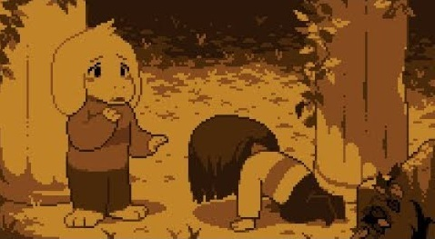
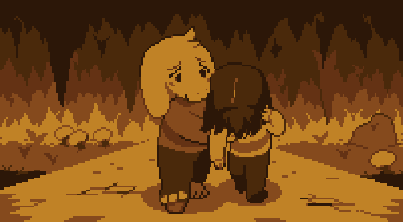
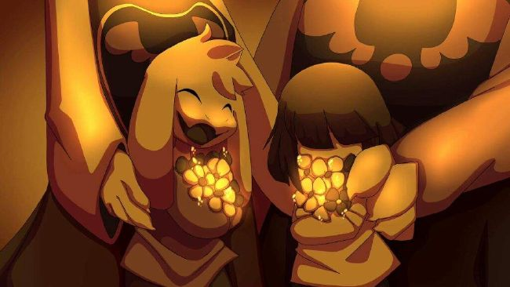
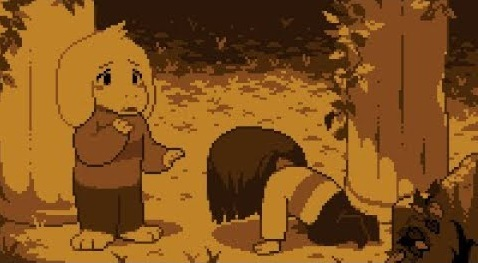
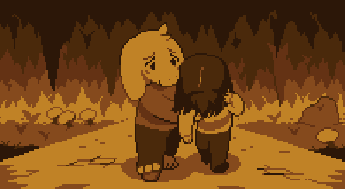
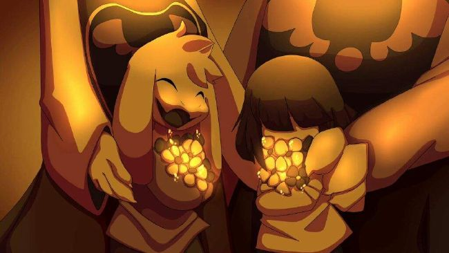
 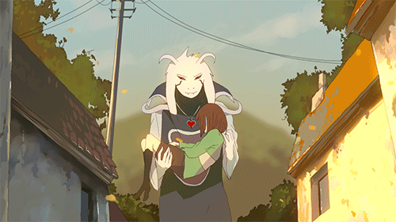
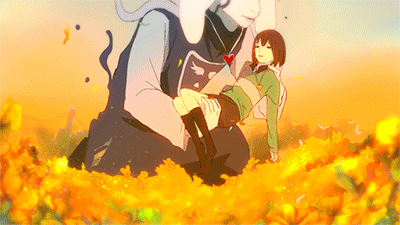
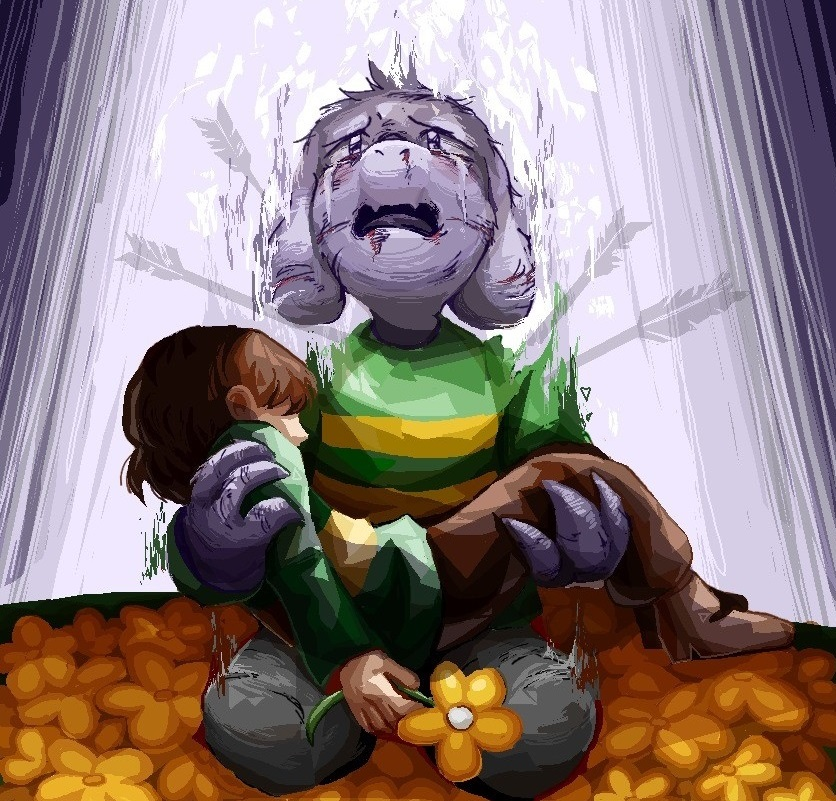
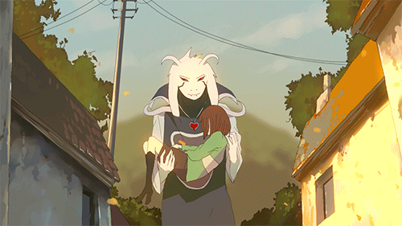
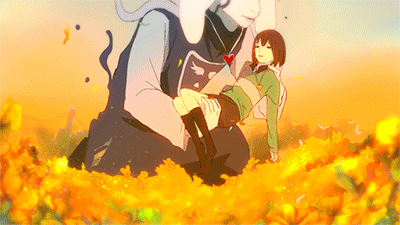
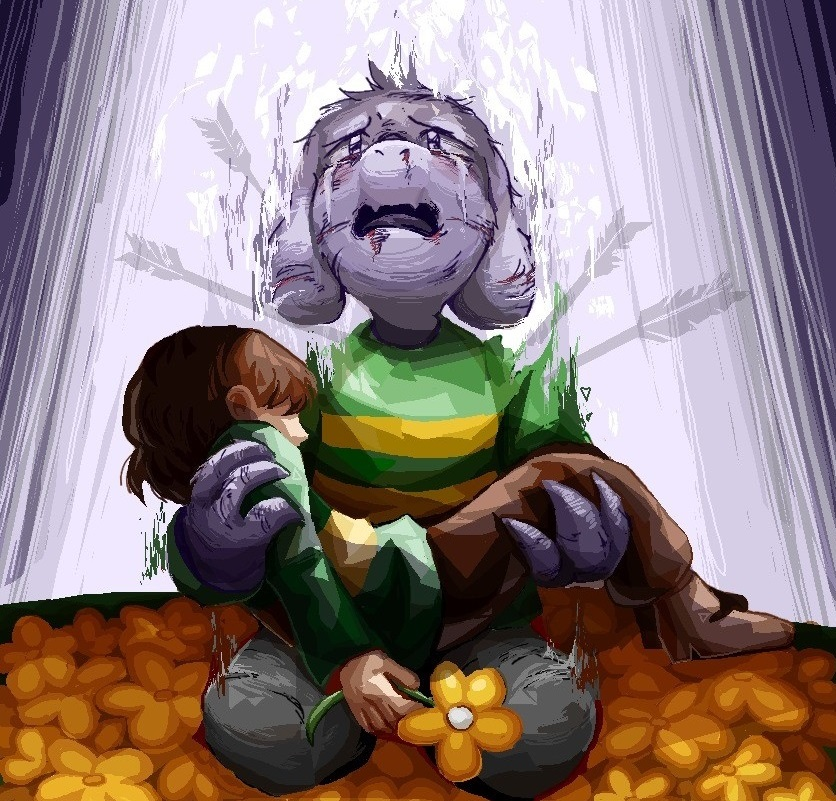Asgore y Toriel habían perdido dos hijos en tan solo un día, esto fue devastador para los dos reyes, y llenos de ira Asgore implanto
una nueva ley “Todo humano que caiga será asesinado y su alma será llevada a la capital donde será almacenada para conservarlas y conseguir las 7
necesarias para quebrar la barrera.
Toriel no le gustaba esta ley, pues, aunque los humanos asesinaran a sus hijos ella no podía soportar esta ley, este pensamiento llevo a distintas
discusiones entre los dos reyes haciendo que acabaran divorciándose, y tras esto Toriel se iría a las ruinas, el primer lugar al que los humanos
pueden ir tras caer del monte evott.
No se sabe cuando cayo cada uno, pero si podemos saber más o menos como murió cada.
- La primera seria el humano con el alma celeste de la paciencia, probablemente cayo del monte evott y se hizo mucho daño, pues la cama de flores que hay
al caer aún no se había formado, por lo que deambulo ensangrentado por las ruinas, hasta que cayó en un segundo puzle el cual sería su sentencia.
Probablemente tras esto Toriel pasando por ahí encontró el cadáver del humano, y apenada llevo al cuerpo y su alma a Asgore, con la esperanza que
usara esa alma para atravesar la barrera y hablar con los humanos para conseguir otras 6 almas de funerarias o hospitales y así romper la barrera.
Por suerte o desgracia Asgore nunca hizo eso. - El siguiente humano en caer fue el humano con el alma naranja de la valentía, probablemente fue asesinado por uno de los guardias caninos reales de esa época, en Snowdin.
- Luego cayeron juntos 2 humanos, el humano con el alma de la integridad azul y el humano con el alma de la persistencia lila, los dos llegaron a Waterfall y tristemente murieron, no se sabe por quién, pero podemos pensar en Gerson o un posible guardia real que vigilaba Waterfall.
- El quinto humano posiblemente fue el del alma de la justicia amarilla, el cual murió en Waterfall también probablemente, y sus posesiones fueron arrastradas por la corriente al vertedero de Waterfall lugar donde fueron recuperadas por Catty y Bratty para ser vendidas próximamente al protagonista.
- Y el ultimo humano fue el alma de la generosidad/amabilidad verde, el que más lejos llego, aunque no se pudo acercar a la barrera, este murió posiblemente cayendo a la lava de hotland.

Los monstruos vivían bajo tierra lejos de cualquier civilización humana que pudiera dotarles de los recursos necesarios para vivir, de forma que ¿de dónde conseguían la energía eléctrica que los monstros necesitaban para vivir?
Para solucionar este problema fue creado el CORE una maquina gigante en hotland, que extrae la energía de la tierra o mejor del centro de esta y la transforma en energía eléctrica y mágica, y otro de los avances en la ciencia de los monstros es una máquina que fue llamada el extractor de determinación, avance echo en la búsqueda de descubrir un método con el que quebrar la barrera, aunque extrañamente no se sabe quién lo creo, aunque algunas fuentes dicen que fue un tal
Esto es muy extraño pues la que es la primera científica real Alphys nunca menciono que esos avances fueran suyos.
Alphys llego a ser científico real enseñando a Asgore su avance en robótica pues supuestamente había
conseguido hacer un robot con un alma, este sería llamado Mettaton, aunque todo esto fue una farsa, pues realmente el robot con un alma
no era más que un monstro fantasma que se le había otorgado un cuerpo robótico y este lo había controlado.
Después de esto y conseguir el puesto como científico real empezó a experimentar con las almas humanas que se iban consiguiendo, en concreto
logro extraer gracias al extractor de determinación, la determinación de las almas de los humanos que caían, que les permitía a sus almas persistir
tras la muerte de sus portadores, después de esto se fijó sus objetivos.
El primero era hacer un ser que no fuera ni humano ni monstruo, así que probo inyectando determinación en una de las flores doradas que el rey
poseía, de aquí nacería Flowey.
Y luego saco una hipótesis en la que si le inyectabas a un monstruo caído este podrá aguantar más tiempo vivo o durar para siempre, un monstruo
caído, sería lo equivalente a los monstruos en estar en estado de coma, pues cuando un monstruo está a punto de morir, estos se acuestan inmóviles
y en poco tiempo morirán, Asgore ayudo a Alphys en esto, pidiéndole a su reino que le ofrecieran a la científico real monstruos en estado de
caídos, fueron ofrecidos varios monstruos entre ellos tendríamos 5 perros, en concreto los progenitores de los que en un futuro serán la guardia
real canina, o la madre de SnowDrake, Alphys procedió a hacer sus experimentos, así fue inyectándoles determinación a los distintos monstruos que
iban, pero todo salió horrible, la determinación era un poder muy fuerte y los monstruos no eran capaz de soportarla, o por lo menos no aguantar
gran cantidad de esta, El experimento salió muy mal, los monstruos a los que se les inyecto la determinación se empezaron a derretir y con ello
juntándose a los monstros con los que estaban en contacto, así es como se crearon las amalgamas, desde ese momento Alphys tiene a las amalgamas
encerradas en lo profundo del laboratorio real, teniendo que soportar miles de cartas y mensajes de sus familiares deseosos de verles vivos de
nuevo…

Tras los experimentos nacio Flowey, encontrandose con su padre y viviendo un tiempo con el, pero... no era capaz de sentir nada,
flowey no tenia alma, no podia sentir felicidad o tristeza, asi que simplemente se quito la vida, pero curiosamente no paso nada, seguia vivo, era como
si no se hubiera suicidado, seguia vivo, pero estrañamente... nadie recordo su exitencia, su padre le habia olvidado, asi que decidio ir a las ruinas
junto a su madre a ver si podia volver a sentir algo... pero paso mas de lo mismo n a d a, por lo que estaba en un mundo sin ningun tipo de sentimiento
y con el poder de no morir asi que decidio usar este poder para hacer todas las cosas que pudiera, conocer gente, hacer amigos y todo, aunque de ninguna
forma pudo conseguir lo que cuando fue asriel pudo, conseguuir las almas y salir del subsuelo, por lo que con el poder que tenia de que nadie recordara sus
aciones decidio buscar otra "RUTA" y empezo a matar gente, es decir, no sentia nada y nadie nunca recordaria lo que hubiera echo, ademas puede que con esto
pueda porfin salir y conseguir las almas, aunque parece ser que nunca pudo pasra del juez final Sans, por lo que tal vez manipulando a su hernmano podria porfin
vencer a Sans, pero esto no fue asi, por lo que simplemente se rindio y dejo de reiniciar.
Y fue asi como en el 210X cayó Frisk "EL SEPTIMO" humano, el humano con el alma de determinacion, capaz enfrentar la determinacion de Flowey y asi evitando que el pueda
nunca resetar mas.